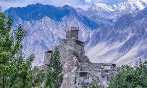
History
Discover the region's past — forts, Silk Road heritage and cultural evolution.
Gateway to towering peaks, turquoise lakes, and rich mountain culture — perfect for trekking, photography and cultural exploration.
Gilgit is your doorway to the Karakoram & Greater Himalaya — ideal for multi-day treks, scenic road trips, cultural exchanges and photography.
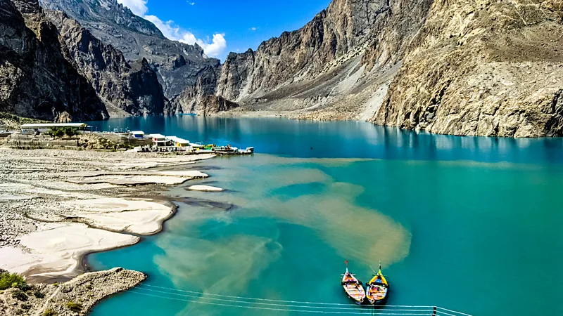
Adjust days for trekking routes or travel time — many drives are scenic but can be slow.
Fly Islamabad → Gilgit for fastest access (limited seats). Scenic road option: Karakoram Highway — allow extra travel time for stops and occasional delays.
From homestays in Hunza to mid-range hotels in Gilgit. Peak season (Jul–Sep) fills quickly — reserve early if you have fixed dates.
Acclimatise slowly: rest on arrival and avoid heavy exertion for 24–48 hrs. Stay hydrated and carry basic altitude meds if you're prone to AMS.
ATMs are in larger towns but rare in small villages — carry cash for excursions. Mobile signal is patchy in remote valleys; download offline maps before heading out.
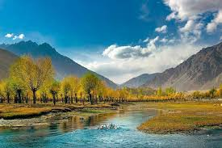
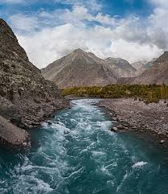
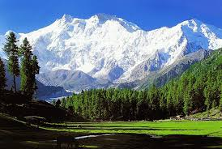
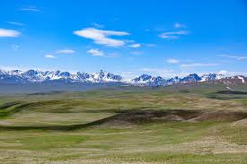
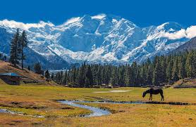
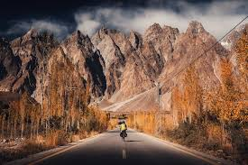
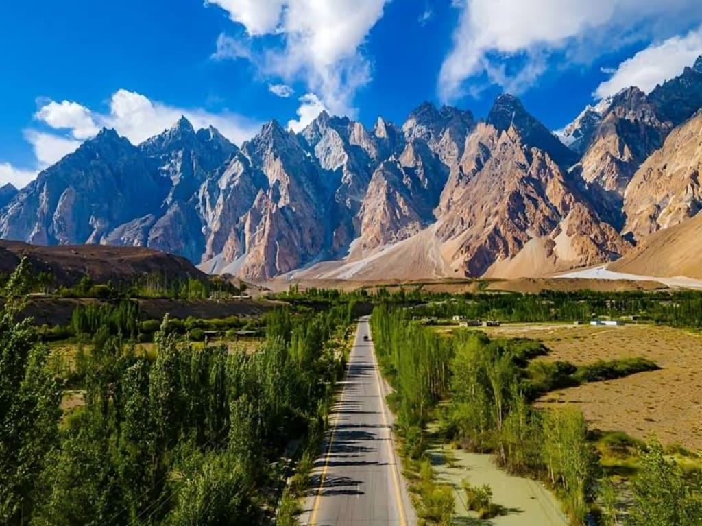
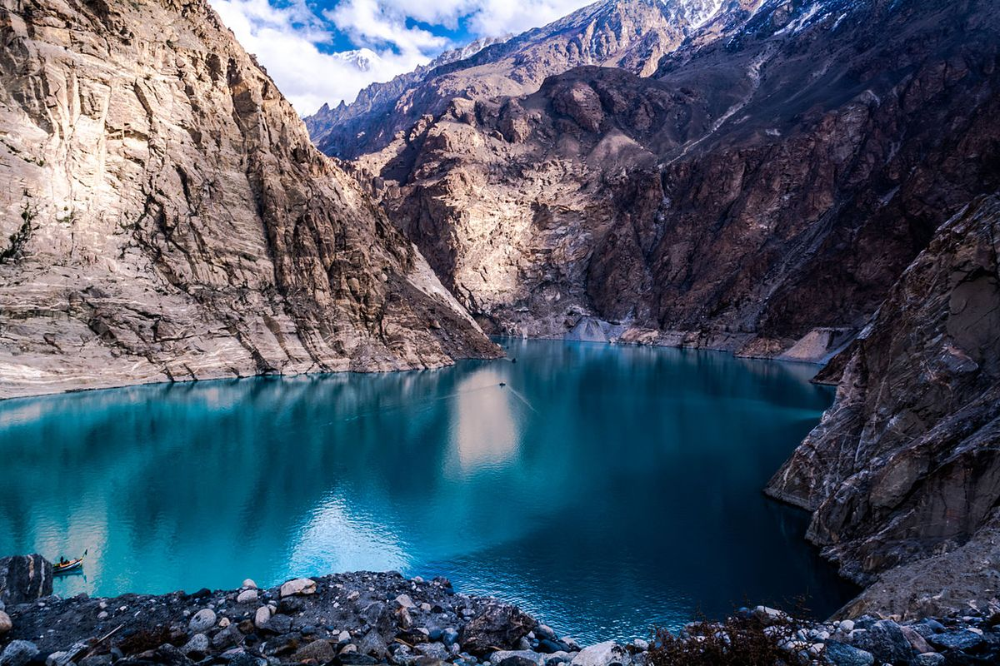
Click images to enlarge.
Quick links to key pages — click any card to go there.

Discover the region's past — forts, Silk Road heritage and cultural evolution.
Top natural and cultural attractions — lakes, valleys and peaks.

Local dishes, festivals and agricultural traditions of the region.
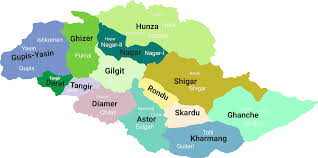
Get in touch with local guides, access maps and plan your trip.